FOUNDER 01
竹林 一
たけばやし はじめ
麗澤大学 特任教授
横浜市立大学大学院 客員教授
大阪大学フォーサイト（株） エバンジェリスト
元オムロン株式会社 イノベーション推進本部 シニアアドバイザー
イノベーション
エコシステム
新規事業
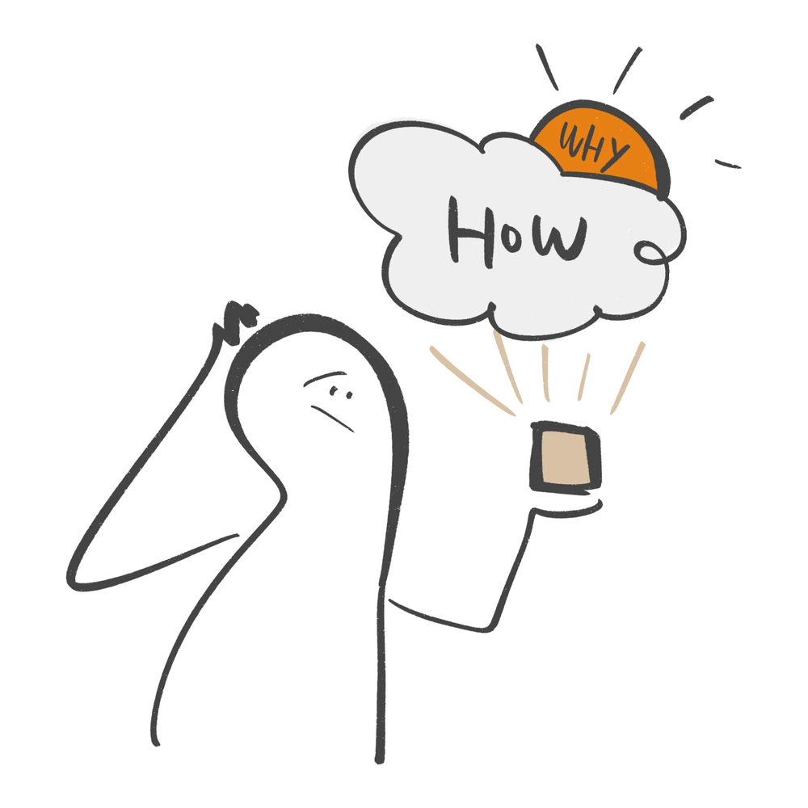
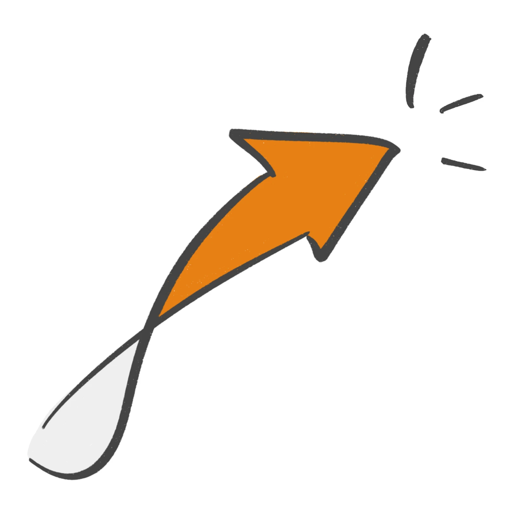
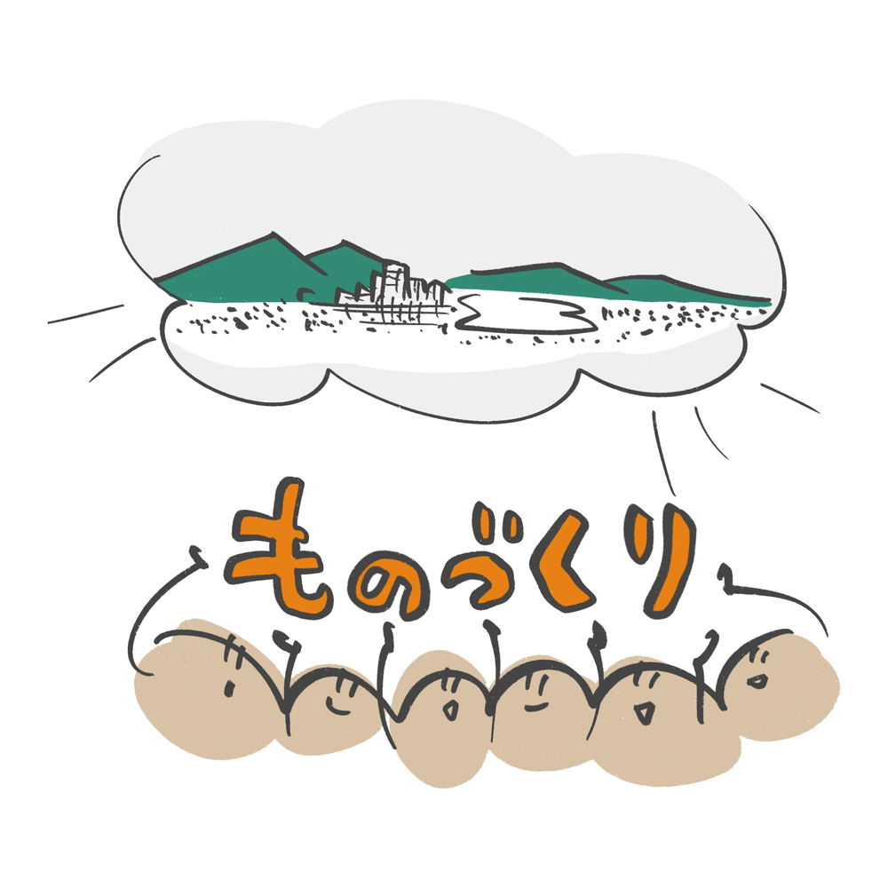
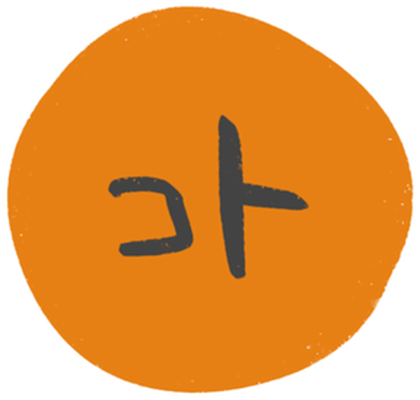
が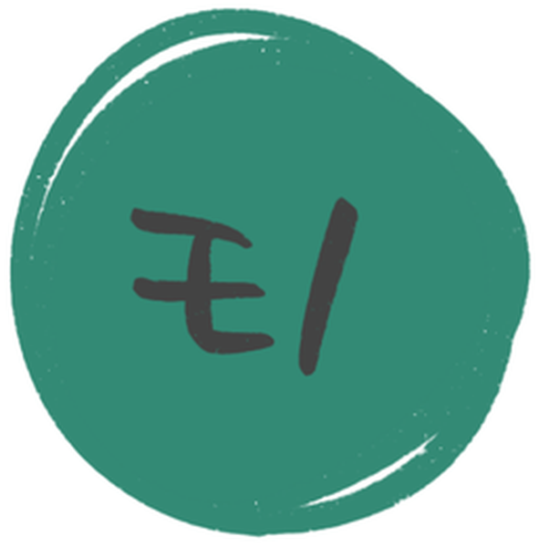
を生み、が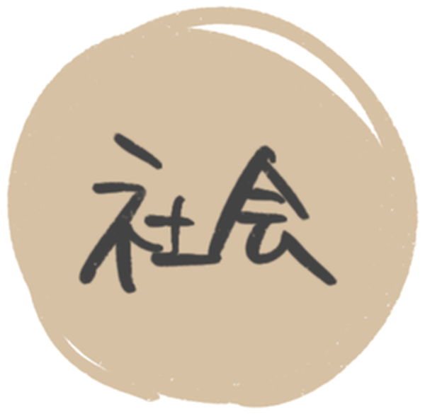
を変える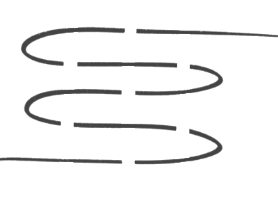
縦糸 / 知的創造
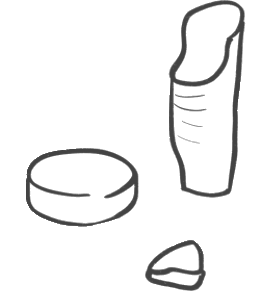
横糸 / 物的創造
布地 / 自由な未来
この3つの循環を通じて、不確実な時代のものづくりのあり方を共に探求します。
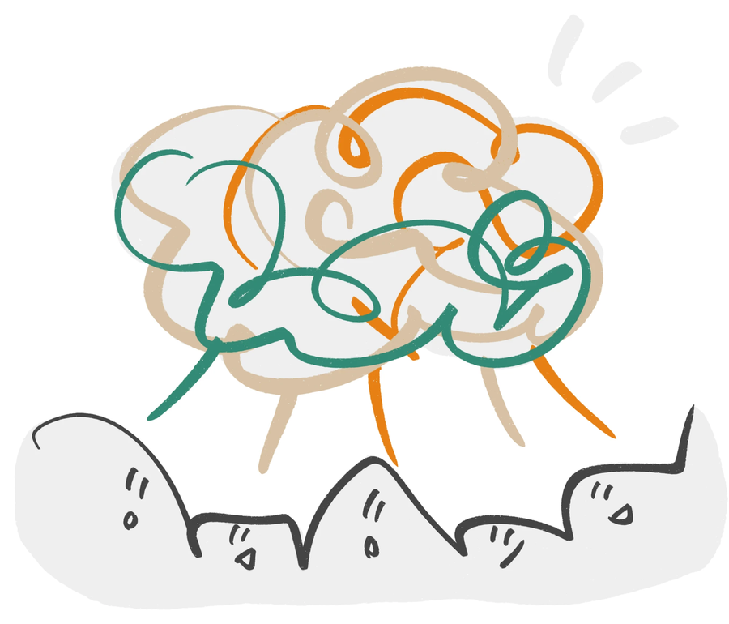
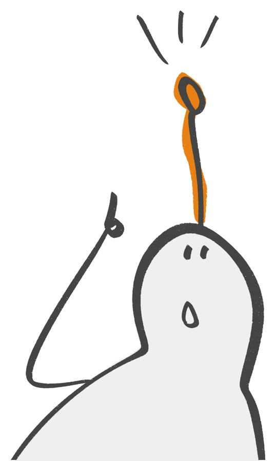
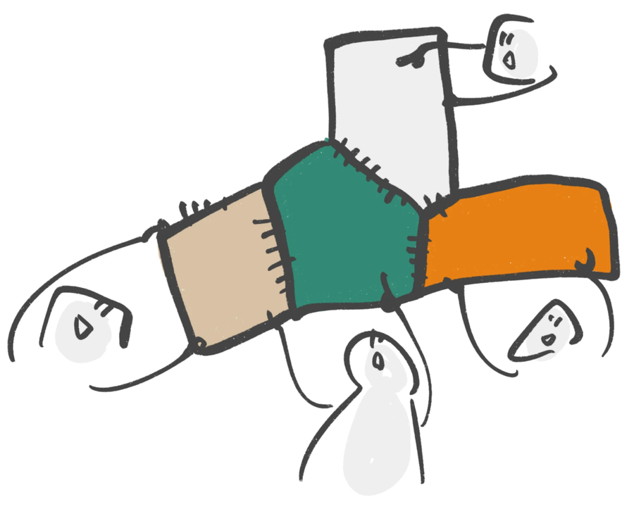
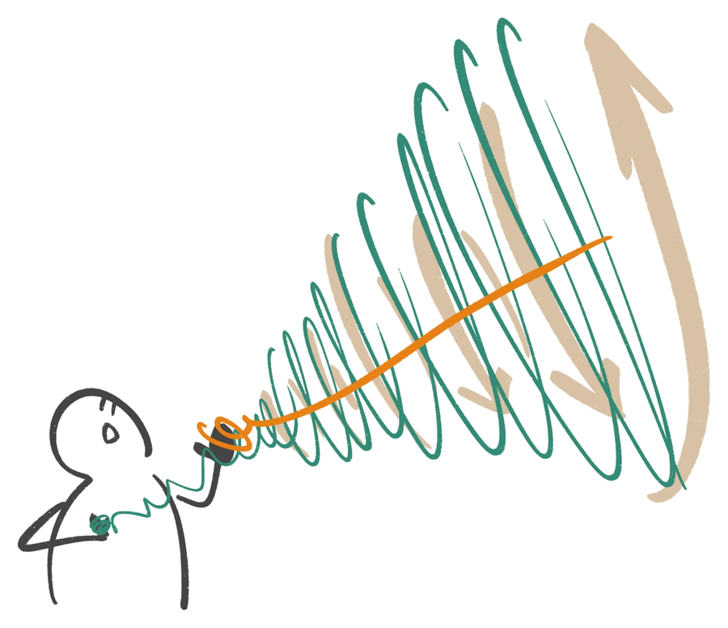
たけばやし はじめ
麗澤大学 特任教授
横浜市立大学大学院 客員教授
大阪大学フォーサイト（株） エバンジェリスト
元オムロン株式会社 イノベーション推進本部 シニアアドバイザー

やまもと みつよ
JOHNAN株式会社 代表取締役社長執行役員
京都大学経営管理大学院 特命教授
ミシガン大学ビジネススクール MBA / 自然資源環境大学院 MS
2026年12月14日（月） 18:30〜20:00
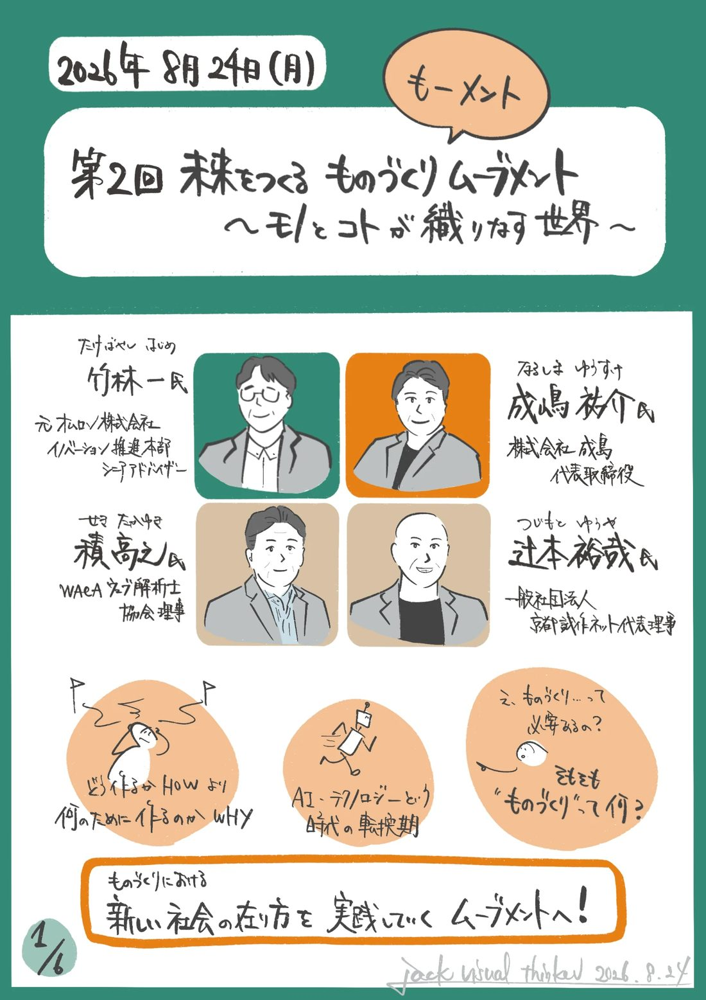
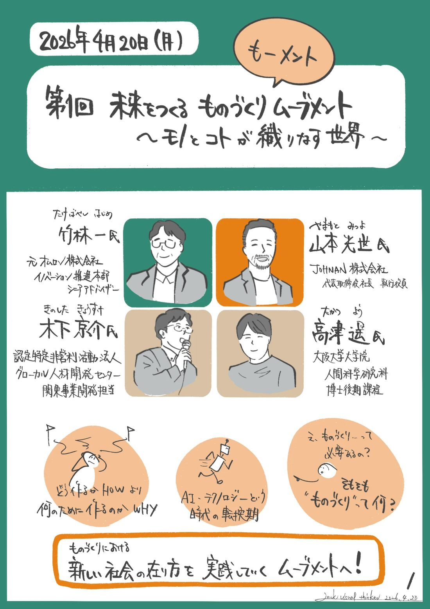
次回イベントはFacebookグループで告知します。

ウェビナーアーカイブ・対談動画を配信
Noteで発信

「つくることは生きること？」そんな問いを育てるラジオ
活動の告知と、メディアに取り上げられた記事をまとめています。
企業や個人の哲学（縦糸）と技術（横糸）を交差させ、新しい社会（布地）を自らの手でデザインする実践の場です。ぜひ一緒に「モノ・コト・社会」が循環するエコシステムを創りませんか。
Facebookグループに参加する